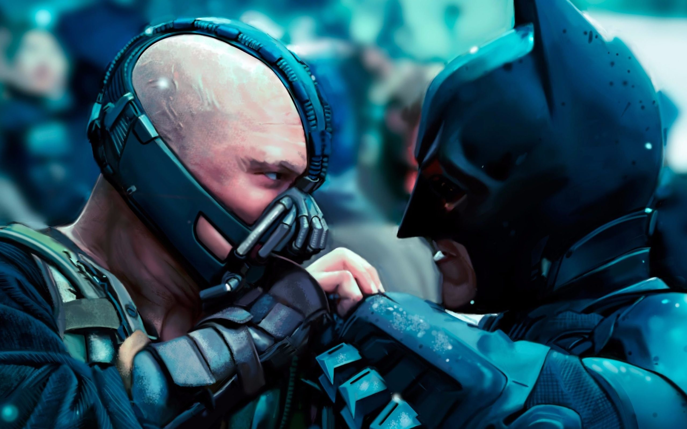

The Dark Knight Rises is a 2012 superhero film directed by Christopher Nolan, who co-wrote the screenplay with his brother Jonathan Nolan, and the story with David S. Goyer.[5] Based on the DC Comics character Batman, it is the final installment in Nolan's The Dark Knight trilogy, and the sequel to The Dark Knight (2008). The film stars Christian Bale as Bruce Wayne / Batman, alongside Michael Caine, Gary Oldman, Anne Hathaway, Tom Hardy, Marion Cotillard, Joseph Gordon-Levitt, and Morgan Freeman. Eight years after the events of The Dark Knight, the revolutionary Bane forces Bruce Wayne to resume his role as Batman and save Gotham City from nuclear destruction.
